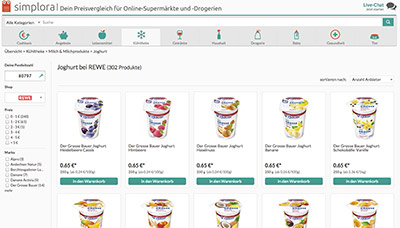

Smartere
Business-Entscheidungen
für Konsumgüterhersteller und
-Händler
- Tracken und verstehen Sie die Performance Ihrer Marke im Online-Kanal
- Beobachten Sie die Preis- und Aktionsstrategien Ihrer Wettbewerber
- Treffen Sie profitablere Pricing-Entscheidungen - online und offline!
Welche Lösungen bietet Simplora Data?
Simplora Data ist ein Spin-Off von Simplora.de, dem führenden deutschen Preis- und Vergleichsportal für Lebensmittel und Drogerieprodukte.Mit unseren Lösungen erhalten Sie als Konsumgüterhersteller oder -händler einen umfassenden Marktüberblick, erkennen und verstehen die Preis- und Aktionsstrategien Ihrer Wettbewerber und treffen selbst informiertere, profitablere Entscheidungen bei Pricing und Sortimentsgestaltung.
» Lösungen für Hersteller
» Lösungen für Händler

Aus welchen Quellen aggregiert Simplora Data die Daten?
Auf Basis des Preis- und Vergleichsportals Simplora.de und unserer Zusammenarbeit mit Händlern verfügt Simplora Data über einen enorm wertvollen Fundus an Daten: eine detailliert gepflegte und täglich aktualisierte Produktdatendank mit über 180.000 Produkten und hunderttausenden Produktinformationen, Preise und Preisentwicklungen für alle Online-Händler (u.a. REWE Online) und Daten zu vielen tausenden Kaufentscheidungen zu Lebensmitteln und Drogerieprodukten, die jeden Monat auf Simplora.de von Nutzern getroffen werden.
Mit Simplora Data erhalten Sie übersichtliche Analytics, die nicht nur den Online-Kanal umfassend abdecken, sondern aus denen sich auch direkte Schlüsse und Handlungsempfehlungen für den (offline) Einzelhandel ableiten lassen.
Ihr Ansprechpartner
Christoph Marx
E-Mail:
christoph.marx@simplora.de
Telefon:
+ 49 89 3853 4817
Mobil:
+ 49 163 67 87 129